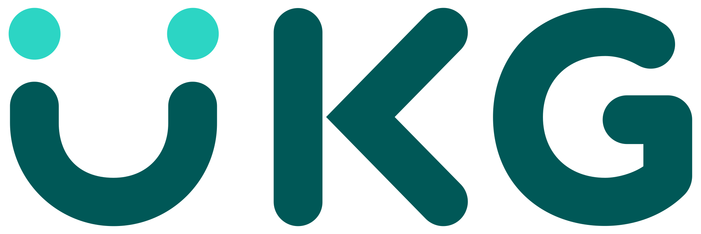

Professional Software Developer at Ultimate Kronos Group
Nov 2019 - Present
Java
Spring
PostgreSQL
Git
Docker
Kubernetes
Frontend (HTML,CSS,Javascript)
Education
B.Sc. in Computer Science
University of British Columbia Okanagan
About Me
As a passionate and dedicated software developer, I have been honing my skills since November 2019 at UKG. My journey in the tech industry has been both challenging and rewarding, allowing me to grow professionally and personally. My work focuses on creating robust and user-friendly applications that solve real-world problems, and I take great pride in contributing to innovative projects that enhance user experiences.
Outside of my professional life, I have a diverse range of interests that keep me balanced and inspired. I'm an avid video gamer, finding joy in exploring new virtual worlds and staying updated with the latest gaming trends. Additionally, I have a deep love for sports, particularly hockey and golf, which provide a perfect blend of physical activity and strategic thinking. Playing guitar is another passion of mine, offering a creative outlet and a way to unwind.
In my spare time, I channel my enthusiasm for technology into personal projects. I enjoy coding websites and applications, utilizing a variety of languages and frameworks such as HTML, CSS, JavaScript, Dart, and Flutter. This continuous learning and experimentation allow me to stay ahead in the ever-evolving tech landscape and refine my craft. Whether it's through work or hobbies, my goal is always to create, innovate, and make a positive impact.